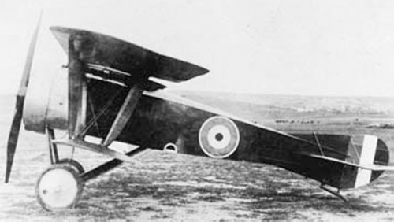

A.1 Scout

- Разработчик: Alcock
- Страна: Великобритания/li>
- Первый полет: 1917
- Тип: Истребитель
Самолет Alcock A.1 Scout был спроектирован и построен флайт-лейтенантом Джоном У Элкоком, снискавшим мировую известность после
первого беспосадочного перелета через Атлантику вместе с Артуром Брауном на самолете Vickers Vimy. Истребитель Элкока получил
прозвище "Sopwith Mouse", так как был собран из деталей разбитых, списанных или неисправных истребителей Sopwith - Triplane,
Pup и Camel.
Фюзеляж, тележка шасси и большая часть нижнего крыла - от истребителя Triplane, внешние части верхнего крыла - от истребителя
Pup, стабилизатор - от истребителя Camel. Центральные секции нижнего и верхнего крыльев изготовлены заново. Другими
нововведениями в хвостовом оперении с проволочными расчалками стали форма и расположение киля и руля направления.
Первый полет А.1 выполнил в октябре 1917 года. На нем был установлен ротативный мотор Gnome Monosoupape мощностью 100 л. с.
(74,6 кВт), впоследствии замененный более мощным двигателем Clerget 9Z.
A.1 некоторое время использовался во 2-ом авиакрыле морской авиации Великобритании, но в начале 1918 года он был разрушен при
столкновении на земле с самолетом DH.4.
| Летно технические характеристики | |
|---|---|
| Модификация | A.1 |
| Размах крыла, м | 7.82 |
| Длина, м | 6.71 |
| Высота, м | 2.78 |
| Масса, кг | |
| - пустого самолета | 458 |
| - нормальная взлетная | 677 |
| Тип двигателя | 1 ПД Le Rh ne 9J |
| Мощность, л.с. | 1 х 110 |
| Максимальная скорость , км/ч | 164 |
| Крейсерская скорость , км/ч | 148 |
| Продолжительность полета, ч.мин | 2.45 |
| Максимальная скороподъемность, м/мин | 285 |
| Практический потолок, м | 4875 |
| Экипаж, чел | 1 |
| Вооружение: | один 7.7-мм пулемет Vickers бомбовая нагрузка - 11,3 кг на подкрыльных бомбодержателях |